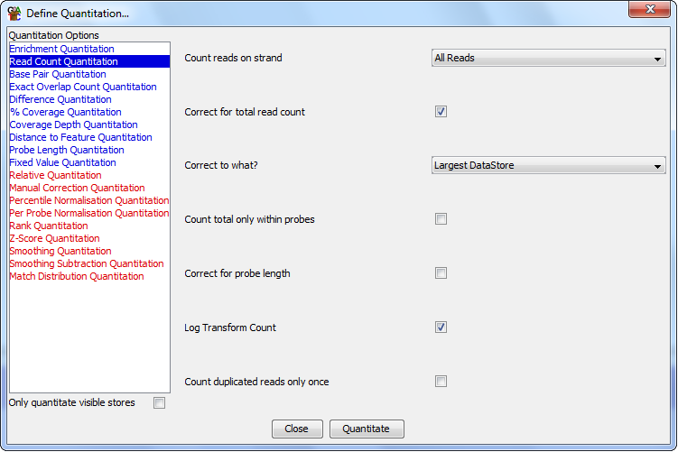

Read Count Quantitation
The Read Count quantitation is the simplest and most commonly used
quantitation. It counts up the reads within a probe and can correct
this raw count according to a few different factors which might bias
the result - allowing it to be compared to other data sets.
The read count quantitaiton is probably the best one to use for an
initial look at your data. It provides a more quantitative assessment
of the distribution of reads over all probes than just looking at how
the reads stack up in the raw data tracks.
Options

The options you have for this module are:
- The types of reads you want to count (All / Forward / Reverse / Unknown)
- Whether you want to correct for the total read count. If you are comparing
different datasets with different total counts then this will normalise the average
count per probe.
- If you normalise to total read count you can choose whether the correction
is made to scale up to the number of reads in the largest data store, such that
its counts will be unaffected, and all other counts will be scaled up. Alternatively
you can normalise per million reads to get a count which is consistent between
different sets of analysis, but will return fractional counts, or negative
counts if working on a log scale.
- If you want the total read count correction to be applied only using reads
inside the current probeset. This would be useful if you wanted to exclude certain
regions of the genome from this correction (eg Chr X/Y).
- Whether you want to correct for the length of your probes. If your probes are
of different sizes you would expect to get a higher count in longer probes. This
correction adjusts the count to a count per kilobase of probe, so a 1kb probe would
get raw counts and other sizes would be adjusted. Unless your average probe length
is much longer than your average read length this correction could introduce a bias
into your results since the correction is just off probe length, but the counts
include any read which overlaps your probe - even if only by a single base.
- If you want to log transform your count. If you have a large range of values
in your count you can calculate them on a log2 scale to make them easier to view.
- If you want to ignore duplicated reads. If you select this option then every
unique read position (start, end and strand must be the same) will only be counted
once and duplicates will be ignored
Warning
If you choose to quantitate your data on a log scale then any probes which contain
no reads will have their initial read count increased to 0.01 reads to avoid problems
with infinite values when log transforming. This value is set before any subsequent
correction for total read count or probe size. This means that in log transformed
data different data stores could end up with different absolute values for probes
containing no reads. If probe length correction is applied then probes with no
reads will end up with a range of low values reflecting the different lengths of the
probes. In these cases you might want to use an initial linear quantitation to allow you
to flag and possibly filter out the regions with no reads, before later moving on to
quantitate on a log scale.